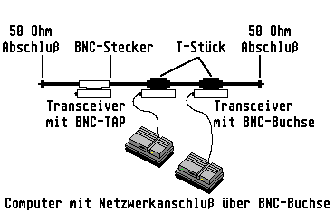
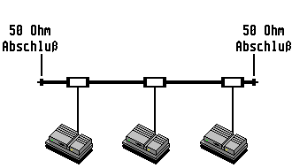

Previous
Next
TOC
IEEE 802.3 (lOBase2)
Andere Bezeichnungen: Cheapernet, Ethernet Thinwire
Mit IEEE 802.3 1OBase2 wurde ein wesentlich billigeres und aufgrund
der Flexibilität leicht zu verlegendes Kabel standardisiert. Verwen-
det wird ein RG58 oder 1OBase2 Koaxialkabel. Einzelne Kabelsegmente
dürfen maximal 185 m lang sein und pro Kabelsegment sind daher 30
Transceiver/-Anschlüsse erlaubt. Der Mindestabstand zwischen den
Transceivern beträgt 0,5 bis 0,8 Meter. Der 1OBase2 Bus muß an beiden
Enden mit 50 Ohm abgeschlossen sein. Geerdet wird auch hier nur an
einem Ende. Bei Endgeräten (DTE) mit integrierten Transceivern werden
keine externen Transceiver und Transceiverkabel zum Anschluß an den
Bus benötigt. lOBase2 kann mit verschiedenen Verkabelungstechniken
realisiert werden. Die Vernetzung erfolgt mit der BNC-Doppel-Koax-
Anschlußdose.
10Base2 Verkabelung mit Transceiver (BNC-Tap)

Diese Verkabelungstechnik ist der 10Base5 ähnlich, statt Yellow Cable
wird 10Base2 benutzt. Die Transceiver haben BNC-Taps oder eine BNC-
Buchse. Der Einsatz von Ethernetkarten mit integriertem Transceiver
(das heißt BNC Anschluß) ermöglicht eine einfache 10Base2 Verkabe-
lungstechnik. Die prinzipielle Vernetzung ist in folgender Abbildung
dargestellt (,,fliegende Verkabelung'').

Die Computer werden direkt an den 10Base2 Bus angeschlossen (die
Ethernetkarten direkt an das BNC-T-Stück). Vom T-Stück abgehend ist
keine verlängerung zum Computer erlaubt. Die praktische Realisierung
eines 10Base2 Netzes erfolgt mit fest installierten Dosen.
weiterblättern
Kapitel IEEE 802.3 (10Base2), Seite 2